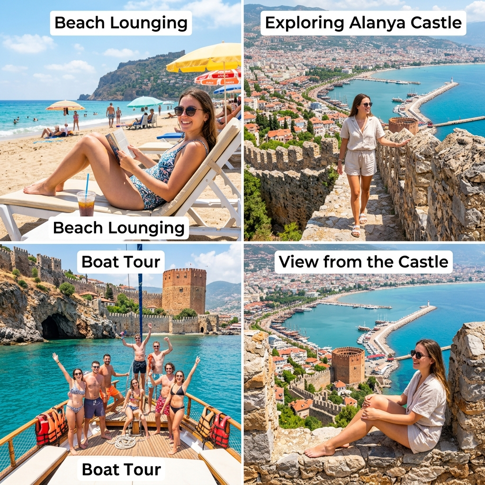
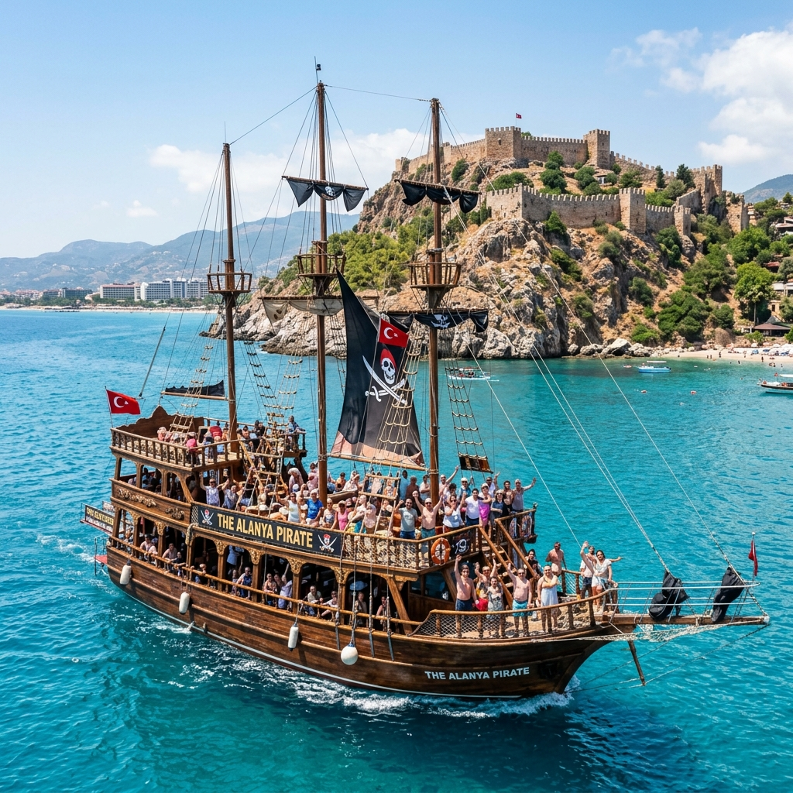
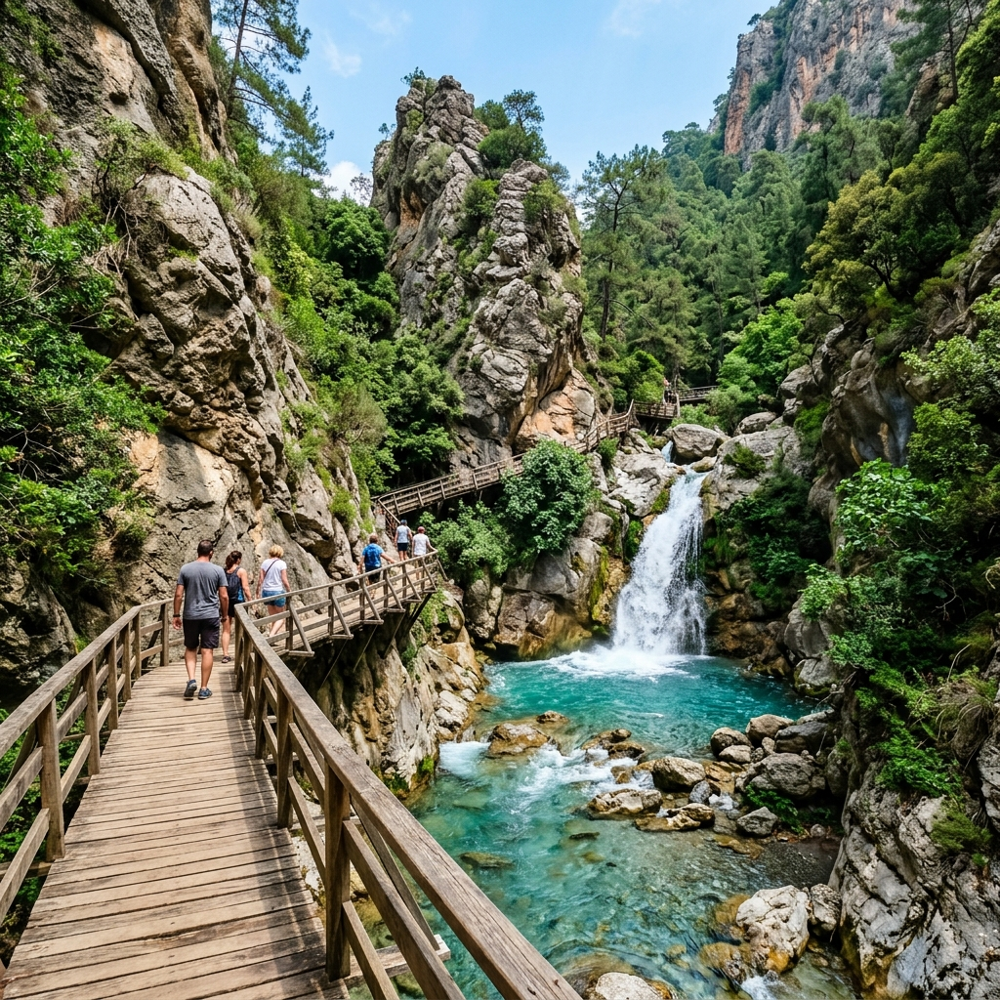
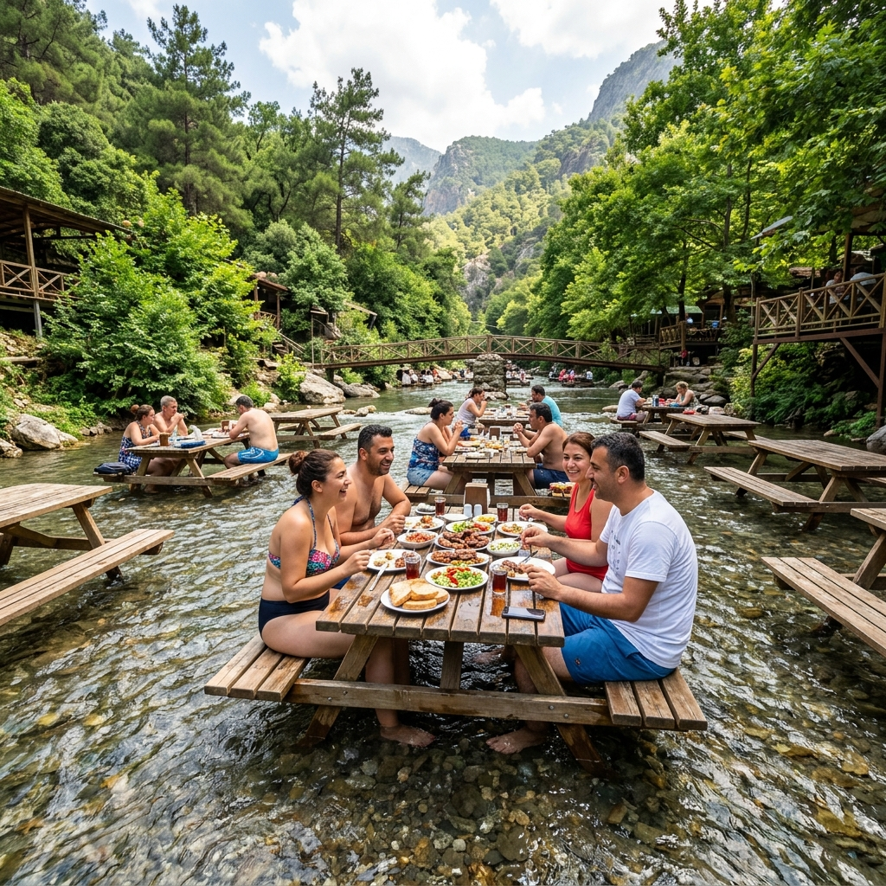
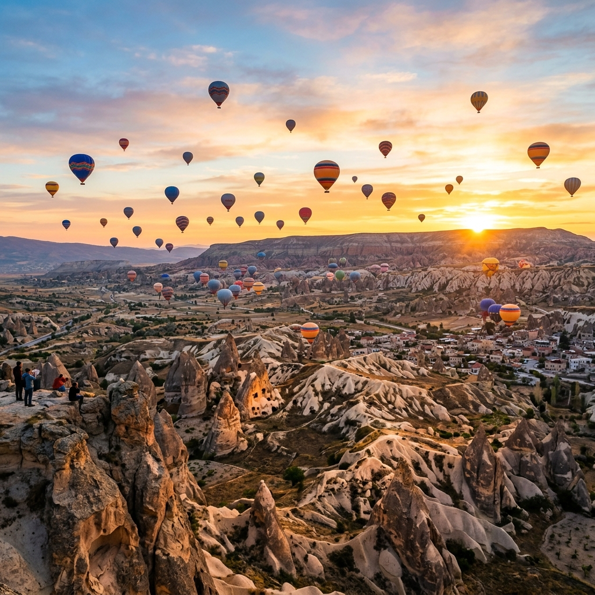

Aktiviteler

28 Nisan 2026
Alanya'da Neler Yapılır? En Harika 10 Aktivite (2026)
2026 yılı Alanya tatilinizde denemeniz gereken eğlence, tarih ve doğa dolu en iyi 10 etkinlik.
Devamını OkuAlanya ve Türkiye hakkında en güncel bilgiler, seyahat rehberleri ve macera hikayeleri

2026 yılı Alanya tatilinizde denemeniz gereken eğlence, tarih ve doğa dolu en iyi 10 etkinlik.
Devamını Oku
Alanya tatilinizi unutulmaz kılacak, doğa, eğlence ve deniz dolu en keyifli mavi yolculuk deneyimi.
Devamını Oku
Toros Dağları'nın eteklerinden masmavi koylara, şelalelerden ormanlara aksiyon dolu doğa yolculuğu...
Devamını Oku
Buz gibi suları, ahşap yürüyüş yolları ve görkemli şelalesiyle Sapadere Kanyonu'nu keşfetmeye hazırlanın.
Devamını Oku
DoğaAlanya'nın yaz sıcağından kaçıp su üzerinde yemek yiyebileceğiniz ve serinleyeceğiniz harika bir kaçış noktası.
Devamını Oku
Sıcak hava balonları, yer altı şehirleri ve eşsiz peri bacaları ile Alanya'dan Kapadokya'ya rüya gibi bir yolculuk.
Devamını Oku